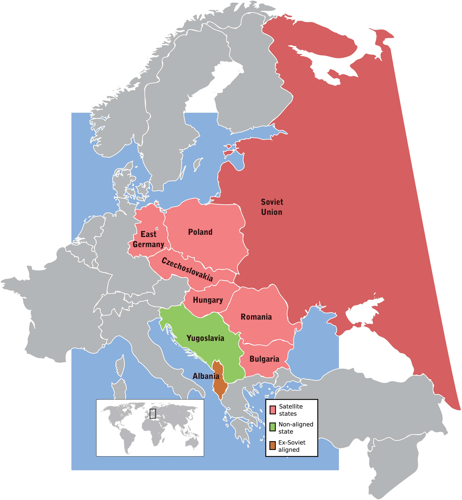

President Ronald Reagan’s top priority while in office was related to international affairs. He was not satisfied with containing Communism, but instead sought to “roll back” its influence throughout the globe. Reagan’s style of leadership emphasized leaving the execution of his ideas and policies to others. The president’s strategy regarding world affairs, dubbed the Reagan DoctrineA guiding force in Reagan’s foreign policy, the Reagan Doctrine suggested that the United States must support the armed forces of any regime that was waging war against Communist forces., likewise relied on finding allies who were willing to support his anti-Communist worldview rather than directly deploying US forces. As a result, the heart of the Reagan Doctrine was the president’s announcement that the United States would provide aid to all groups fighting against Communist forces worldwide. Supporters of the Reagan Doctrine pointed out that military aid and covert CIA operations resulted in anti-Communist victories without risking large numbers of US troops or repeating the experiences of Korea and Vietnam. Critics feared that these covert operations may have unintended consequences similar to the Bay of Pigs Invasion and the 1953 coup that placed the shah of Iran in power. Others pointed out that many of the recipients of US military aid, such as the Nicaraguan Contras and the Afghan Mujahedin, used methods and maintained beliefs that many Americans opposed.
Figure 13.6

President Reagan meets with leaders of Afghan forces opposed to the Soviet Union in 1983.
These conflicts and internal contradictions were especially troublesome in the Middle East, where Cold War tensions coexisted with historic rivalries between East and West. The ease with which Egypt was able to play the United States and Soviet Union against one another during the Suez Crisis demonstrated the fragility of détente in the region. Tensions rose even further in the late 1970s as the Soviets hoped to regain influence in the Middle East by supporting a number of Marxist regimes along the Red Sea in East Africa and in neighboring Afghanistan. In the spring of 1978, Communists in Afghanistan temporarily seized power with the aid of the Soviet Union. However, this government proved unpopular with the majority of the Afghan people, partly due to its support for women’s rights and other liberal and secular reforms. For the Afghans, this secular and pro-Soviet regime seemed much like the pro-Western government of Iran that had just been overthrown by the Muslim cleric Ayatollah Khomeini.
The Soviets and Americans were stunned. In just one year, religious leaders in Iran had expelled the US-backed shah and Islamic rebels were engaged in a civil war that threatened to overthrow the pro-Soviet government of Afghanistan. If the Islamic Afghan rebels prevailed and started their own government, the Soviets feared, they might also follow the Egyptian model of expelling Soviet military advisers in return for US aid. If this happened, some Soviet leaders feared, Afghanistan might form a deal with the West that might someday lead to the construction of US missile bases along the Soviet border.
Applying their own version of the domino theory, Soviet leaders responded to the growing Afghan Civil War by sending 75,000 troops to support the pro-Soviet regime. With little understanding of the history, geography, religion, or culture of Afghanistan, Soviet leaders predicted that their troops would return within a month after crushing all resistance to the Communist government in Kabul. Instead, the Soviet Invasion of AfghanistanBegan on Christmas Day in 1979 and lasted for a full decade. The Soviet Union was attempting to prop up an unpopular Communist government in Afghanistan against the wishes of the majority of the Afghan people. The armed uprising against the Soviet military was led by Islamic fundamentalists who were backed by the United States. resulted in a decade-long war between Soviet troops and Islamic rebels, some of whom were supplied by the United States. US leaders backed a variety of Islamic rebels in hopes of making Afghanistan resemble the quagmire of Vietnam for Soviet forces. In the end, neither the Soviet Union nor the United States made significant efforts to discern the ideas and needs of the Afghan people, spending millions of dollars to arm the enemies of their rival without considering the long-term consequences of a potentially short-sighted action. Just as the US-aligned South Vietnamese government fell shortly after US forces withdrew, the nominal government of Kabul was quickly overrun by MujahedinIslamic guerilla warriors in Afghanistan who fought against and ultimately repelled the Soviet Union’s invasion of their country. America’s support of the Mujahedin was the result of the Reagan Doctrine’s support of any force that was fighting against Communist forces. Because some of the more radical leaders of the Mujahedin later advocated similar confrontation against the West, the decision to provide weapons to Islamic guerillas has been a source of controversy in recent years. rebels after Soviet forces withdrew in 1989. Before and after the fall of Kabul, Afghanistan was effectively governed by various rebel forces that became increasingly distrustful of both the Soviet Union and the United States.
As one Soviet political scientist later explained, Moscow’s decision to invade Afghanistan was the product of its recent success using the military to sustain corrupt and unpopular Communist regimes in other nations. “In politics if you get away with something and it looks as if you’ve been successful, you are practically doomed to repeat the policy,” Soviet scholar Georgy Arbatov explained. “You do this until you blunder into a really serious mess.” Arbatov believed that Soviet leaders became the victims of their own “success” in ways that paralleled the path that led to America’s decision to use the CIA to sustain unpopular and corrupt right-wing governments. While the long-term “success” of US covert operations in Latin America and the Middle East might be dubious at best, in the short term, US companies made record profits and US consumers enjoyed low-cost imports of coffee, bananas, and oil. Armed with hindsight, it appears that Soviet military intervention in Afghanistan and Eastern Europe thwarted potential anti-Communist revolutions in the short term. In the long-term, however, it led to costly interventions that bankrupted Moscow and diminished the international prestige of their government in ways that contributed to the fall of Communism and the Soviet Union itself.
The Soviets might have reconsidered their decision to invade Afghanistan if they had a more thorough understanding of Afghanistan’s own history of resisting conquest. Similar lessons from history might have informed US policy regarding the Iraq-Iran WarA war between Iraq and Iran that began with the Iraqi invasion of Iran in September 1980 and lasted until an armistice in 1988. The invasion occurred in the wake of the Iranian Revolution, and as a result, the United States provided tentative support to Iraq due to the belief an Iranian victory would be contrary to America’s strategic interests in the Middle East., which erupted in September 1980. Iraqi dictator Saddam Hussein hoped to capitalize on instability in the region following the Iranian Revolution and the declining support of Egypt in the Arabic world following its recognition of Israel. In addition, the Iraqi leader feared that the revolution that had led to the ousting of Iran’s secular dictator would spread to his country. Hussein hoped that a quick and successful invasion of Iran—a rival dating back centuries—would lead to renewed Iraqi patriotism and greater popular support of his own regime. Hussein’s decision was also calculated on the response of the United States. In the wake of the Iranian hostage crisis, Hussein understood that there was little chance that America would support Iran.
Iran possessed a number of modern weapons systems that it had purchased from the United States during the era when the US-backed shah of Iran was in power. These arms sales ended when the Islamic cleric and fiercely anti-Western Ayatollah Khomeini seized power in 1979. As a result, Iranian forces were in desperate need of US supplies to repair and rearm many of their American-made weapons. However, the possibility of an Iranian victory terrified many Western leaders and led the United States to provide direct and covert aid to Iraq. Reagan sent Donald Rumsfeld to Baghdad in preparation for possible resumption of normal diplomatic relations. The Reagan administration chose to minimize Iraq’s use of chemical weapons. It also helped to derail efforts of the United Nations to condemn Hussein for atrocities committed against Kurdish people in Iraq, many of whom were being recruited by the Iranians who hoped to start a popular uprising against Hussein.
Concerns about an Iranian victory led the Reagan administration to ignore many of the atrocities committed by Hussein. The same was not true of Libyan dictator Muammar el-Qaddafi. In 1986, Libyan terrorists planted a bomb that killed two US soldiers in West Berlin. Reagan responded with a series of air raids against military and governmental targets in Libya that killed a number of military personnel and civilians but failed to harm Qaddafi or alter his support of terrorist networks. The use of terrorismUsing violence or the threat of violence against innocents in an attempt to achieve a certain outcome or spread fear for political purposes. against the US had become more frequent during the early 1980s. For example, Islamic jihadists bombed a garrison of US Marines in Beirut, Lebanon, in October 1983. This attack instantly killed 241 servicemen who had been acting as peacekeepers in a conflict regarding Lebanon and Israel. Reagan made little effort to retaliate against these Jihadists. Instead, he simply withdrew US forces from Lebanon.
Figure 13.7

The remains of the US Marine barracks in Beirut, Lebanon, following a terrorist attack that instantly killed 241 US troops.
In addition, a violent anti-Jewish faction named Hezbollah that was supported by Iran and other Arabic nations captured a number of American hostages. Iranian officials were approached by American operatives who hoped to secure the release of the American hostages. At this point, Reagan violated his own pledge that the United States would never negotiate with terrorists. The Reagan administration brokered a deal whereby the United States agreed to sell arms to Iran to secure release of American hostages held by the Lebanese terrorists. However, only a few hostages were actually released, and the arms sales likely encouraged the subsequent capture of more American hostages.
In 1986, some of the details of these “arms-for-hostages” deals were uncovered and publicly released by Middle Eastern journalists. The Reagan administration initially denied that any deal was made with Iran. However, these journalists uncovered more evidence, which forced a number of high-level US officials to resign in disgrace. Reagan himself denied direct knowledge that the weapons sales were part of any bargain with the terrorists, admitting only that he had failed to detect and prevent members of his administration from carrying out the deals. “I told the American people that I did not trade arms for hostages,” Reagan explained in a partial confession. “My heart and best intentions still tell me that is true, but the facts and the evidence tell me it is not.” While Reagan’s popularity temporarily declined, the confessions of several of his aides prevented special investigators from finding any clear evidence that Reagan had personally ordered the deals. Ironically, the success of Reagan’s detractors in creating an image of an aloof president who allowed his staff to make decisions on their own helped to corroborate the president’s defense. However, these weapons sales to Iran would soon play a major role in a larger scandal known as the Iran-Contra Affair.
Reagan would earn a reputation as a diplomatic leader who helped to facilitate a peaceful end to the Cold War in Europe. However, the Reagan administration pursued a very different strategy when it came to Latin America. Reagan reversed Carter’s policy of only aiding anti-Communist groups that supported democracy, resuming the supply of American military aid to right-wing dictators and paramilitary forces throughout the region. If the risk was small enough, Reagan was even willing to send US forces to directly remove a left-wing government. For example, a left-leaning and pro-Castro government seized power on the tiny Caribbean island of Grenada in 1979. The Reagan administration feared that Soviet missiles might be placed on the island. In 1983, the island’s government switched hands and US officials viewed the resulting instability as an opportunity to intervene. Under the pretext of concern for the safety of US students attending a private medical school, thousands of marines landed on the island in October 1983. Within three days, the island and its 100,000 residents were firmly under US control and a new government was formed.
The Invasion of GrenadaOn October 25, 1983, 7,000 US soldiers overwhelmed and seized control of the island of Grenada. The invasion was in response to a similar action by Marxist rebels who had earlier seized control of Grenada’s government and were perceived by the United States as installing a Communist government aligned with the island of Cuba and the Soviet Union. led to international condemnation of the United States. The United Nations Security Council voted 11-1 to condemn the US action, with the American representative casting the single vote in opposition. Reagan’s supporters pointed to the fact that only eighteen US troops were killed in the conflict. They also pointed out that the operation had succeeded in its goals to protect US citizens on the island, prevent a possible civil war, and replace a pro-Soviet regime with one that is friendly to the United States. Opponents on the left viewed the action as imperialistic. Others feared that the unilateral action against a member of the British Commonwealth might strain relations with London and other nations because US leaders made no effort to consult with British or Caribbean leaders.
Leaders throughout the region condemned the invasion of Grenada, but many were more concerned with the US intervention in Central America. The Somoza family operated a dictatorial government that operated Nicaragua like a police state. The United States had supported the Somoza dictatorship until the late 1970s when the Carter administration withdrew American support. Without US aid, the Somoza family was ousted by a popular revolution in Nicaragua that was led by a group of Marxist rebels known as the SandinistasSupporters of the Socialist Party of Nicaragua that controlled the government of that country during the 1980s but were engaged in a civil war with counterrevolutionaries known as “Contras” in the United States.. The Sandinistas were generally supported by the people of Nicaragua, but frequently resorted to violence and imprisonment against those who sought a return of the Somoza regime. Reagan and his advisers decided that making distinctions between totalitarian and humanitarian regimes that opposed Communism was a luxury the United States could not afford. This decision simplified US efforts to roll back Communism by encouraging the United States to simply provide weapons to any Latin American dictator or counterrevolutionary regime that opposed the Sandinistas. However, this compromise also led to one of the darkest legacies of the Reagan Doctrine.
Figure 13.8

A map showing the routes taken by US troops during the invasion and occupation of the Caribbean island of Grenada.
Under Reagan’s leadership, the United States renewed its support for a repressive but anti-Communist dictatorship in neighboring El Salvador. In exchange, the Salvadoran government increased its efforts to eliminate leftist forces in its own country who were backed by Cuba and the Nicaraguan Sandinistas. El Salvador’s military government likely used some of this aid to further the work of its notorious “death squads.” These units traveled the Salvadoran countryside and killed everyone suspected of being a Marxist or aiding the rebels. The United States also provided massive aid through the CIA to Nicaraguan counterrevolutionaries (nicknamed ContrasGuerilla fighters who opposed the Socialist Party of Nicaragua and were aided by the United States. US support of the Contras has remained controversial because of the methods used by the Reagan administration to provide covert aid in violation of US law and because of the connections of many Contra leaders with leading drug traffickers) who sought a return of the Somoza dictatorship. Because of their willingness to fight the pro-Soviet Nicaraguan government, Reagan hailed the Contras as “freedom fighters.” Reagan had applied the same label to the anti-Soviet Mujahedin in Afghanistan. Most Americans, unfamiliar with Latin American affairs and supportive of their president, simply accepted Reagan’s definition of the Contras as the “good Latin Americans.” The US military soon established multiple bases throughout the region. In fact, critics labeled Nicaragua’s northern neighbor the USS Honduras due to the large number of US troops that were present.
Later revelations would lead many to question the assumption that the Contras were fighting for the freedom of Latin America. In addition, the Reagan administration became increasingly involved in a number of illegal and covert actions that would lead to an investigation of the president and the resignation of several top officials. The entire scandal was labeled the Iran-Contra AffairA scandal involving the Reagan administration’s covert sale of about 1,500 missiles to Iran in a failed attempt to secure the release of seven hostages. Excess proceeds from the sale were covertly provided to the Contras in Nicaragua. These deals not only violated US laws and constitutional concepts regarding presidential authority, they may have encouraged other terrorist groups to take American hostages.. As the name implies, the Iran-Contra Affair involved events in Nicaragua as well as the Middle East.
The Reagan administration’s troubles began in 1982 when Congress refused to continue providing military aid to the Contra rebels in Nicaragua. Many in Congress questioned the assumption that the Sandinistas presented a threat to US security. Others questioned the morality of supporting the oppressive Somoza and Salvador regimes. In September 1982, Congress approved the Boland Amendment, prohibiting US officials from providing aid to the Contras. Aware that US funds were still being covertly funneled to the Contras, Congress approved a second ban on funding the Contras in 1984.
Despite both of these laws, the Reagan administration continued to provide weapons and money to the Contras through a variety of legal and illegal methods. For example, the money the government had earlier received from its secret arms sales to Iran in exchange for the promised release of US hostages had been hidden from Congress and the public. The Reagan administration determined that these funds should be used to covertly supply the Contras with weapons. In addition, the Reagan administration still provided weapons and money to surrounding Latin American dictators. Many of these leaders funneled the American supplies and weapons to the Contras because they feared a Sandinista victory might encourage revolutions in their own nations. Unlike the covert aid that the Reagan administration secured with the proceeds of the Iranian sales, this method of arming the Contras violated the spirit and not the letter of the Boland Amendment.
Figure 13.9

This 1985 political cartoon was critical about Reagan’s denial of personal culpability regarding the Iran-Contra Affair. In the first panel an actor claims “it didn’t happen,” which is labeled “Iran-Contra, take 1.” In the second panel an actor claims “it happened, but I didn’t know,” only to later exclaim “I might have known, but I don’t remember.”
The Reagan administration also responded to what it viewed as congressional meddling by launching a public relations campaign that sought to present the Contras as freedom fighters and the Sandinistas as anti-American. The government rewarded pliable journalists who agreed to publish a variety of accusations against the Sandinistas. These articles led more and more Americans to agree with the government’s position on Nicaragua. In response, Congress eventually agreed to lift its ban on providing the Contras with weapons. However, this aid was quickly rescinded when it was discovered that the Reagan administration had been secretly using government funds to support the Contras all along.
The Reagan administration came under fire in 1984 when it was discovered that the CIA had placed mines in the harbors and rivers of Nicaragua. Even the archconservative Barry Goldwater responded with anger, calling the CIA’s actions an unjustifiable act of war. The United Nations condemned the action, and the World Court demanded that the United States apologize and pay reparations. However, the United States was able to use its veto power to thwart any action by the UN Security Council. US Ambassador to the United Nations Jeane Kirkpatrick responded by pointing out that the Sandinistas were likewise guilty of violence in the ongoing civil war.
Kirkpatrick’s defense of US actions quickly unraveled in October 1986 when a secret shipment of military supplied was shot down over Nicaragua. A captured crew member and documents on board revealed that these supplies were part of a regular covert operation by the CIA to supply the Contras in violation of US law. Even more damning was the subsequent publication of details about how the administration had used the profits from secret Iranian arms sales to supply the Contras. Three investigations conducted during the late 1980s and early 1990s made it clear that President Reagan was aware of the nefarious details of the weapons sales and secret funding of the Contras.
By the time the US public became aware of the basic details of the weapons sales in November 1986, many officials connected to the scandal had already resigned their posts. Reagan’s former National Security Advisor Robert McFarlane even attempted suicide, offering a vague apology to the American people in his note. Most officials were granted immunity for their testimonies, and those convicted of crimes were pardoned when Reagan’s vice president George H. W. BushFormer CIA director and vice president under Reagan, Bush would become the forty-first president of the United States after defeating Michael Dukakis in the 1988 presidential election. became president. CIA director William Casey passed away before the investigation, and Marine Lieutenant Colonel Oliver North shouldered much of the blame and was fired along with other midlevel officials whose convictions were later reversed or pardoned.
Reagan escaped impeachment by denying any knowledge of the weapons sales. In contrast to the workaholic Carter, who surrounded his office and bedroom with piles of documents, Reagan delegated most every decision to members of his administration. Outside of issues involving taxes, national defense, and the possible spread of Communism, Reagan seemed to regard most issues as details that were best handled by his staff. This orientation allowed Reagan to enjoy daily naps, frequent vacations, and a work schedule that rarely included evenings and weekends. Reagan’s critics charged him with being aloof and lazy. Others believed that the president’s chief advisor James Baker and a few others in Reagan’s inner circle were running the country rather than the man the American people had elected.
Ironically, years of criticism regarding Reagan’s hands-off management style helped to convince the American public that the Iran-Contra affair had been conducted in secret behind the president’s back. Reagan delivered a series of apparently heartfelt apologies along with a number of testimonies in which he responded, “I don’t recall” to nearly every question he was asked. For many Americans, the aging actor appeared as the victim of a partisan attack by individuals who hoped to further their own careers. Critics of the president maintained that even if Reagan was telling the truth, the fact that these criminal deeds were carried out at the highest levels of his administration was evidence that Reagan must step down. Others argued that President Reagan had knowingly funded an illegal war and sold weapons to terrorists.
The investigation effectively ended all aid for the Contras, who quickly agreed to a ceasefire. Once they were no longer engaged against the Contras, popular support for the Sandinistas also declined, and many Sandinista leaders were replaced by a coalition government following a 1990 election. However, the decade-long civil war had spread throughout Latin America and destroyed the region’s agricultural economy. This development helped to spur the growth of a number of powerful drug cartels. Because the Contras were also heavily funded by area drug smugglers and because the United States enlisted the services of notorious drug trafficker Manuel NoriegaThe head of Panama’s military, Manuel Noriega used his power to act as a dictator and controlled all aspects of the Panamanian government. Noriega had been a paid CIA contact for many years and was also paid by the CIA to funnel weapons and money to the Contras in Nicaragua. Noriega was also paid by numerous drug traffickers, which the United States ignored until 1988 when he was indicted for these crimes. After his refusal to recognize the legitimacy of the election of his political rival, US forces invaded Panama and arrested Noriega. to funnel money to the Contras, questions still remain about the complicity of the CIA in the resulting cocaine epidemic of the 1980s. Many residents of inner-city neighborhoods continue to blame the government for the introduction of “crack” cocaine, a highly addictive form of the drug that they believed helped to fund the Contras.
Most scholars agree that the Contras were dependent on drug money, but limit their accusations against the Reagan administration to negligent enforcement and indirect assistance to drug traffickers via US aid to the Contras. Historians who specialize in the history of Latin America have been limited in their access to documents related to the Iran-Contra Affair. As a result, definitive conclusions remain allusive. The Reagan administration’s relationship with Noriega and other nefarious individuals with connections to drug traffickers might never be fully understood. At best, these historians argue, the Reagan administration was grossly negligent in assuring that the money funneled to the Contras was actually used to fund an insurgency that Congress had declared the government would no longer support. In the end, the only American to be incarcerated for any crime in connection to the Iran-Contra Affair was an eccentric former minister and peace activist. Bill Breeden stole a sign for an Indiana street named in honor of Admiral John Poindexter, the national security advisor convicted of multiple felonies. Breeden had requested a $30 million ransom for the return of the street sign, the same amount he believed the federal government had transferred to the Contras from the proceeds of the weapons sales. The former minister spent several days in jail, while Poindexter’s felonies were dismissed.
The Reagan administration was much more cautious when confronting the Soviet Union than developing nations. For example, Reagan barely responded when a Soviet jet shot down a Korean airliner that was carrying a US congressman and had strayed into Soviet airspace in 1983. Reagan’s most aggressive move from the Soviet perspective that year was his announcement of the Strategic Defense Initiative (SDI)Often referred to by the nickname “Star Wars,” Strategic Defense Initiative was a theoretical system of armed satellites that could destroy nuclear missiles before they reached their targets.. SDI was a defensive network of satellites that Reagan believed could detect and destroy enemy nuclear missiles with lasers and other countermeasures. Critics of Reagan’s plan emphasized the technological challenges in shooting down a single missile from space given current technology. To serve its purpose of deterrence, they pointed out, SDI satellites would have to be able to shoot down hundreds of missiles at once. Even if the United States built thousands of operational SDI satellites, these critics continued, Soviet scientists would simply find ways to build “trickier” missiles with defensive countermeasures of their own that would render the SDI satellites ineffective.
From the Soviet perspective, Reagan’s support of SDI was an attempt to upset the strategic status quo that had been based on nuclear deterrence. If SDI proved effective, Soviet leaders feared, the United States would be able to launch a nuclear attack without fear of retribution. For this reason, some conservatives in the United States predicted that a successful SDI program would simply inspire the Soviets to launch a preventive strike before America’s “missile shield” was fully operational. Some even feared that SDI technology would be used to create new space-based offensive weapons that would increase the likelihood of nuclear disaster. Believing SDI to be a topic more appropriate for science fiction writers than world leaders, Reagan’s critics labeled the plan “Star Wars” after the popular movie that was setting box office records. Others pointed to the billions spent on SDI and other programs as the greatest threat to national defense. By producing crippling deficits that might restrict the nation’s ability to fund its military in the future, even some within the military believed that SDI was a poor use of the nation’s resources.
Similar to previous administrations dating back to President Eisenhower, the Reagan administration was also cautious when it came to supporting protests against Communism throughout Eastern Europe. These movements gained millions of supporters in Poland and Hungary during the 1970s and 1980s. In 1979, the newly anointed Pope John Paul IIThe leader of the Catholic Church worldwide between 1978 and his death in 2005, Pope John Paul II was a critic of Soviet Communism who inspired Catholics and non-Catholics throughout his native Poland to support the movement for democracy. returned to his native Poland and offered encouragement to those who sought to reform the autocratic Communist government of his homeland. The following year, a new anti-Soviet trade union in Poland named SolidarityA Polish trade union that opposed Communism and quickly won the support of the majority of Polish workers during the early 1980s. launched a series of protests that utilized many of the same nonviolent tactics of the American civil rights movement.
The Polish government eventually responded with modest reforms, some of which led to greater economic development. However, Polish authorities initially tried to crush Solidarity and all who supported its movement. Poland declared martial law and imprisoned many of the anti-Communist leaders behind Solidarity. Despite these measures, the protests continued until the spring of 1989 when desperate Polish officials responded to popular demands and permitted a free election. Candidates representing Solidarity and other non-Communist groups won those elections in a landslide, leading to the creation of the first non-Communist government in Eastern Europe since the start of the Cold War. Similar Polish attempts to create independent governments had been crushed by the Soviet Union since 1956, but this time there was no violent response from Moscow.
A series of similar anti-Communist uprisings swept Europe throughout 1989 with relatively little bloodshed. For example, the democratic uprisings in Czechoslovakia became known as the “Velvet Revolution” due to the largely peaceful nature with which power was transferred from the state to the people. That same year, the government of Hungary permitted a commission to investigate its own failed revolution of 1956. In a symbolic gesture that seemed to many a repudiation of the Soviet Union, Hungarian leaders agreed to provide a state funeral for the Hungarian revolutionary leader that Nikita Khrushchev had ordered killed following the failed revolution of 1956. The Hungarian government also declared that its border with Austria was open and dismantled the barbed wire fences and guard posts that had prevented Hungarians from crossing into Western Europe.
Figure 13.10
This map of Eastern Europe demonstrates the potential impact of Hungary’s decision to open their borders. Hungary shared a common border with nations such as Austria that had an open border with the West. It also shared borders with several Communist states of Eastern and Central Europe. The nation to the immediate left of Hungary is Austria, while West Germany is located just north of Austria.
The impact of Hungary’s open border with Austria and the West was both immediate and dramatic. Intending only to permit their own citizens to cross into Austria (where they would be able to also cross into West Germany and other non-Communist nations), Hungarian officials were soon confronted with over a 100,000 East Germans who hoped to enter their nation. These hopeful refugees had descended through Czechoslovakia and into Hungary hoping to escape to West Germany via the now open Austria-Hungary border. East German officials rushed to block the growing number of their own citizens who were fleeing their country. Many of these individuals responded by attempting to assure East German officials that they were merely visiting relatives in Hungary. However, these individuals were surprisingly well provisioned for their ostensibly brief vacations and were clearly attempting to escape to the West. The leaders of Czechoslovakia and Hungary recognized that they were powerless to reverse the human tide, but did their best to discourage the migration. By November 1989, none of their efforts would matter as the Berlin Wall came crashing down and East Germans and other Eastern Europeans were allowed to cross into the West by a more direct route.
It is doubtful that anyone living in 1988 could have predicted that the Communist Bloc would cease to exist a year later. Given the history of the region in the past three decades, there were even fewer reasons to believe that democratic revolutions might sweep though Eastern Europe with so little violence. The scenes of students and workers toppling governments and walls occurred much as Karl Marx had predicted a century prior—a mass uprising of intellectuals and proletarians against autocratic regimes. The irony, of course, was that this democratic surge was directed against regimes that were supposed to have created the classless society that Marx’s followers had hoped to create.
Marx had underestimated the difficulties of creating a society that was both wealthy and classless. One of the central contradictions of Communism was that it required at least a temporary centralization of government power. The disinclination of the authoritarian governments of Eastern Europe to relinquish these powers led many to fear that the anti-Communist revolutions of the late 1980s would lead to bloody counterrevolutions and civil wars. Instead, most Communist leaders decided the wisest course of action was to permit free elections.
In sharp contrast to the violent response of the Soviet Union during the first three decades after World War II, Mikhail Gorbachev allowed the dialectic of history to progress in a democratic fashion. Rather than send Soviet tanks to resist the will of the people, Gorbachev did not intervene to halt the democratic revolutions that swept Eastern Europe in 1989. Dozens of bloodless coups took the form of free elections and coalition governments. Communist leaders who were once in absolute control now found themselves discredited and on the outside of parliamentary democracies throughout Eastern Europe. Most of these democratic governments were dominated by the same political parties that the Communists had declared illegal and suppressed for decades. However, few of the previous leaders of these nations were imprisoned. Instead of seeking retribution for the crimes of the past, the new governments looked to the future and even permitted Communist parties to enter candidates in free elections.
Not all Communist leaders shared the self-preserving prudence of the Hungarian and Polish leaders in stepping down voluntarily. As a result, not all the revolutions of Eastern Europe were bloodless. Romanian leader Nicolae Ceausescu ordered protesters shot on sight and called for counterdemonstrations by his loyal supporters. This strategy might have worked if Ceausescu had a large number of supporters. It also might have worked if other Communist leaders joined Ceausescu in punishing dissenters. Instead, Ceausescu was all alone. Communist leaders in neighboring Bulgaria voluntarily stepped down, while those in nearby Yugoslavia faced ethnic conflict and civil war.
Soviet leadership made it clear that they would not send their army to prop up Communist governments facing rebellion at home. Hungary, Czechoslovakia, Bulgaria, and Poland were in the midst of peaceful revolutions. With the leading Communist powers abandoning the hard-liner approach of the previous decades or deeply engaged in internal struggles regarding ethnic violence, Nicolae Ceausescu faced the wrath of his own people alone. The government-sponsored counterprotests he ordered were taken over by his opponents. After the government killed a hundred of these protesters, millions of Romanians responded by supporting the martyred revolutionaries. After a failed attempt to flee Romania, Ceausescu and his wife were executed in a scene reminiscent of the Russian Revolution of 1917. This time, however, the departed were avowed supporters of Marx while the executioners opposed Bolshevism. Communist supporters could do little but insist that their ideas had been betrayed by dictators such as Ceausescu as they attempted to win voters in free elections. Democracy had come to Eastern Europe.
South Africa was colonized by British and Dutch settlers in the seventeenth century. Rivalry between British settlers and a second group of European colonists of Dutch origins (known as Afrikaners) had led to several wars. By the 1900s, the nonwhite majority of South Africa increasingly challenged the colonial rule of these two groups of Europeans. In response, the rivalry between the Dutch and British in South Africa faded and a common “white” identity emerged. In 1948, the new South African government established a system designed to bring British and Dutch whites together while dividing the nation’s various nonwhite groups. The system was labeled apartheidA system of segregation that operated in South Africa between 1948 and 1992. Apartheid was designed to ensure the complete subjugation of the African majority by legally enforcing white supremacy, an Afrikaner word meaning “separation.”
Under apartheid, racial discrimination became institutionalized and South Africans were classified into categories of white, black, and colored. Whites were people of European heritage, blacks were people of African heritage, and coloreds were those of mixed racial origin. Further divisions were made separating the many South Africans of Asian and Indian descent. In addition, Africans were subclassified according to their tribal origins—a distinction that was especially troublesome as most black South Africans had ceased to define themselves in these terms.
Subsequent legislation forcibly removed millions of South Africans of African descent into government-created “homelands.” These homelands were created on the most undesirable lands in South Africa, and residents were denied the rights of citizenship beyond the borders of these government-created slums. Other legislation outlawed political groups that sought to represent people of African descent and made protest against the white-only government a crime. Because whites represented only 15 percent of the population, and because the wealth of South Africa depended on labor-intensive industries such as mining, the government also devised a system to control and exploit nonwhite labor. A key component of this system was the creation of a passbook system. Nonwhites were forced to carry passbooks at all times. The passes identified who a person was and whether he or she was permitted to work in the mines or in the cities. Without a pass, a person could not leave his or her homeland.
The South African government attempted to present apartheid as a fair system that brought stability through separation. Like Native American reservations, the homelands were independent states within South Africa. Residents of these homelands could vote for their own representatives within those states, but they had no voice in the government of South Africa itself. Few Africans participated in these elections, recognizing that the South African government still maintained authority over the homelands. Instead, South Africans supported numerous protest organizations, such as the African National Congress (ANC)The national liberation movement of South Africa that led the struggle against the apartheid South African government for four decades. Some ANC leaders used violence, but most sought rapprochement and were able to convince the white leaders of South Africa that ending apartheid would be in the nation’s interest..
South Africans were inspired by the nonviolent resistance of the US civil rights movement. However, the protests held in South Africa and other African nations that were struggling for independence from colonial and/or apartheid regimes were more likely to serve as catalysts for activism in the United States. For example, in March 1960 and prior to proliferation of nonviolent protest in the United States, 7,000 South Africans marched to police headquarters near Sharpeville without their passbooks and presented themselves for arrest. Under South African law, any nonwhite citizen could be detained for months without explanation. In addition, those joining dissent movements could be imprisoned for life. The presence of 7,000 South Africans overwhelmed the small police force at Sharpeville. Unable to arrest all of the protesters, the police simply opened fire on the crowd. Over seventy people were killed, and hundreds of others were wounded in what would be known worldwide as the Sharpeville Massacre. Most of the victims of the massacre were shot in the back as they fled for safety.
Figure 13.11

Students at Florida State University in Tallahassee participate in a divestment protest. The divestment movement resulted in the economic isolation of the apartheid regime and impelled the South African government to consider democratic reform.
The US government issued a statement of regret for the unfortunate violence at Sharpeville, which included a mild condemnation of apartheid. Part of the reason for the US reluctance to condemn South Africa was the pervasiveness of racial inequality in the United States in 1960. Even more important, many Cold War scholars believe, was the Marxist orientation of many African independence movements during the 1960s. American political leaders sided with the apartheid government of South Africa until the late 1980s—a result of America’s commitment to Britain and its desire to prevent the spread of Marxist ideas. In fact, Robert F. Kennedy (RFK) was the only prominent white American political leader to travel to South Africa during the 1960s. However, his 1966 trip and his lofty rhetoric about democracy and justice failed to include any specific commitment of US support, and RFK was assassinated in 1968.
During the late 1960s, the Johnson administration ordered US companies to sever all ties with apartheid regimes. However, these restrictions were easily evaded by multinational corporations. The Nixon and Ford administrations eased these restrictions and provided aid to European colonial powers such as Portugal that brutally suppressed similar independence movements in its African colonies. Given the close connection between the United States and the nations of Europe that bolstered apartheid regimes in Africa, independence groups such as the ANC drifted toward Moscow and Cuba. And because the ANC received from Cuba and Moscow, the cycle continued and the Nixon and Ford administrations became even stronger supporters of the apartheid government of South Africa. This was especially true after thousands of Africans affiliated with independence movements throughout Africa traveled to the Soviet Union for political and military training in the 1970s.
Marxism’s emphasis on proletarian unity against colonial rulers and Capitalists naturally appealed to South Africans because they were treated like colonial subjects. South Africans were denied citizenship rights and forced to work in diamond and gold mines, creating wealth that aided their oppressors. Other ANC leaders such as Nelson MandelaPolitical leader of the ANC and the antiapartheid movement. Mandela was imprisoned for twenty-seven years, after which he was elected by the South African people to be their first president in the postapartheid era. discouraged the use of paramilitary tactics, hoping that a nonviolent and class-based movement would bring Africans of various ethnic groups together. He also hoped to unite South African laborers who migrated to Africa from Asia and India. Key to Mandela’s plan was convincing the white political and business leaders of South Africa that their nation would become more prosperous if they abandoned apartheid. However, Mandela was arrested by the apartheid government in 1962 and would spend the next twenty-seven years in prison.
The Carter administration was the first to unequivocally condemn apartheid. However, the Reagan administration reversed this position and again allied with the apartheid South African government. The switch was heavily influenced by antiquated intelligence reports that suggested that the ANC was a puppet of Moscow. In actuality, a new generation of ANC leaders had emerged in the 1980s that distanced themselves from the declining Communist Bloc. Instead, they hoped to encourage “black Capitalism” in a new South Africa based on equal opportunity, full citizenship rights, and social justice.
The Reagan administration paid little attention to this change in orientation and continued to back the apartheid regime due to a mistaken fear that an ANC victory would spread Communism throughout South Africa and neighboring Angola and Mozambique. However, college students across the country soon forced the Reagan administration to modify its miseducated position. They also sought to end the complicity of US corporations who sold equipment that was used to enforce apartheid. Students and professors resurrected the teach-ins of the 1960s, leading to a nationwide divestmentA strategy of influencing political change by reducing or eliminating investments in a certain company, industry, nation, or other entity. In regard to South Africa, US college students and African Americans used pressure to force colleges and governments to divest their assets in companies that maintained business relationships with the apartheid South African government. movement on nearly every major college campus. The divestment movement was boosted by early success at Michigan State University where students forced the administration to liquidate all investments within the university’s multimillion-dollar endowment fund that were connected to the South African government.
The divestment movement soon spread to dozens of nearby campuses and statewide college systems like the University of California. By the end of the decade, the student movement had led some state legislatures and nearly one hundred cities to ban local and state governments from doing business with any company that did business with the apartheid government of South Africa. The results were dramatic. International Business Machines (IBM) had made millions of dollars by selling computer equipment to South Africa that was used to enforce the passbook system. By 1987, public pressure and the divestment movement forced IBM to end these sales and join other global corporations in severing all relationships with the South African government.
The divestment movement threatened to destroy the economy of South Africa unless it enacted reform. South African antiapartheid leader and Nobel award winner Desmond Tutu indicated that the divestment movement was one of the leading factors in ending apartheid. Most of the credit, of course, belongs to the South African people who demanded reform through their leaders. By the 1980s, the ANC came under the leadership of Thabo Mbeki and others who convinced the white leaders of South Africa that neither they nor their business interests would suffer by ending apartheid. This was no difficult task given the violence against whites advocated by some ANC leaders in the past. In February 1990, Mandela was released from prison after serving twenty-seven years of a life sentence. Two years later, white voters approved reform measures that permitted all South Africans to vote. The first free election in South African history was held in 1994 and resulted in the selection of Nelson Mandela as president. It also resulted in the creation of a coalition government led by the former white leader of South Africa, F. W. de Klerk and ANC leader Thabo Mbeki.